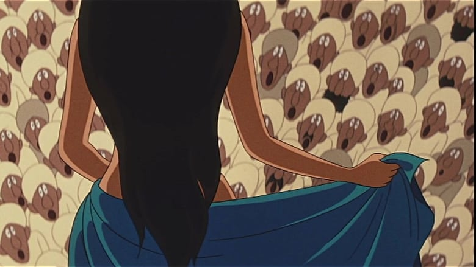

Finally! The X-Rated "Animerama" trilogy helmed by Osamu Tezuka was considered lost for decades, but each film was eventually found and remastered. "A Thousand and One Nights," the first of the trilogy, was released in 1969, one of the first films in the world to start this trend of cheaper, indie, adult and risque animation. And this was the last to be released on Bluray in America, thanks to Discotek Media. It also happens to be the one film of the three I saw before the Blurays were released (I don't condone illegal streaming, but when a legal source doesn't exist...). Being the last I viewed on home video, I can't help but compare "Nights" to it's companion films, "Cleopatra" and "Belladonna of Sadness." Keep in mind, all three are old movies, so modern tastes in pacing and direction aren't in use. Like those films, "Nights" is a bit slow, a bit long, and can be a chore to sit through. And while these were indeed X-rated for their sex content, said content is rather tame compared to... well, most anime on broadcast television today. These scenes in "Nights" succeed in being a bit more suggestive and tantilzing, but people interesting that part of the movie will be disappointed. "Nights" is arguably the best of the three movies, if only because it's the most accessible. Sparringly using some of the editing techniques in "Belladonna" and live-action mixed animation in "Cleopara," "Nights" largely intends to be just a traditional movie, with a fairly standard, but long-reaching, adventure. Inspired by the Arabian Tales, the lead hero is Aldin, a wandering water merchant. Poor though he may be, he's optimistic, carefree and free-spirited, and one of the most memorable and likable characters in this little series. The opening scene is of his silhouette walking on foot through the desert towards Bagdhad, a spring in his step and smile on his face, set to clubhouse music that could have been sung by The Beetles or The Monkeys. In the kingdom, he meets a slave girl whom he quickly falls in love with, and makes love to. From there, his adventures go from extreme danger to pleasure and back again, from being tortured for stealing the slave from her owner, to stealing riches from a den of thieves, to discovering an island of beautiful women, to facing a hoard of large monsters, and discovering a wish-granting Genie. By the end, he's succeeded into becoming the King of Bagdhad himself, and abusing his power to attempt constructing what appears to be the Tower of Babylon, and perhaps demand unknowingly that his secret daughter join his harem. Finally, it ends, bookended with the same scene the movie started with, with Aldin as youthful as ever (despite about 15 years having passed) as he walks through the desert to his next adventure elsewhere.  Loosely inspired from the original stories, there are references to many of them. Presumably, Aldin is the same Aladdin that we know from the Disney movie, or from the similiar "The Thief and the Cobbler," both releasing decades later. Perhaps too many of these stories were squeezed in, with too many side-characters with their own motivations. But there's something appreciable about Aldin's character here, making the film as a whole more fun and more memorable. Goes to show how important a strong lead character is to a story. Ambitious though it is, it isn't as bizarre or as artful as the other movies. I suspect film critics would find less to appreciate because of that, but again, I suspect if a general audience had to choose, this is the film they'd want to watch.Discotek's Bluray is fine, although there's quite a bit of dust scratches in the film print. Like their release for "Cleopatra," anime historian Helen McCarthy provides an audio commentary for some interesting context. But the real star is the included original English dub, considered to be truly lost (it was possibly produced for airline viewing, or some other limited venue), and being newsworthy when Discotek announced they found a copy. Of course, the acting isn't all that grand, but hearing it at all is a blessing. It also cut down the movie by about 20 minutes, and given the movie was a bit too long to begin with, the dubbed version might very well be the version to sit through. To be clear, the entire "Animerama" trilogy is only really worth watching for historians, whether you're interested in Osamu Tezuka's work, in the history of Japanese anime films, or the history of X-rated films that released from the 70's and 80's. If you are still interested after knowing that, then each movie has something unique to offer. Among them, "A Thousand and One Nights" would be the first I recommend watching (despite being less ambitious), as the closest you're likely to have to a good time, almost entirely thanks to a charming lead.
- "Ani" More reviews can be found at : https://2danicritic.github.io/ Previous review: review_A_Spirit_of_the_Sun Next review: review_A_Tree_of_Palme